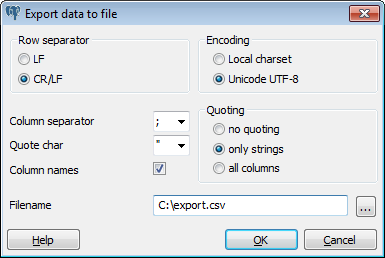

pgAdmin Data Export
Data is written to a file, using the selected options.
The row separator option selects the character used to separate rows of data. On Unix systems, usually a linefeed character (LF) is used, on Windows system a carriage return/linefeed (CR/LF) combination.
The separating character between columns can be selected between colon, semicolon and a vertical bar.
The individual columns can be enclosed in quotes. Quoting can be applied to string columns only (i.e. numeric columns will not be quoted) or all columns regardless of data type. The character used for quoting can be a single quote or a double quote.
If the “Column names” option is selected, the first row of the file will contain the column names.